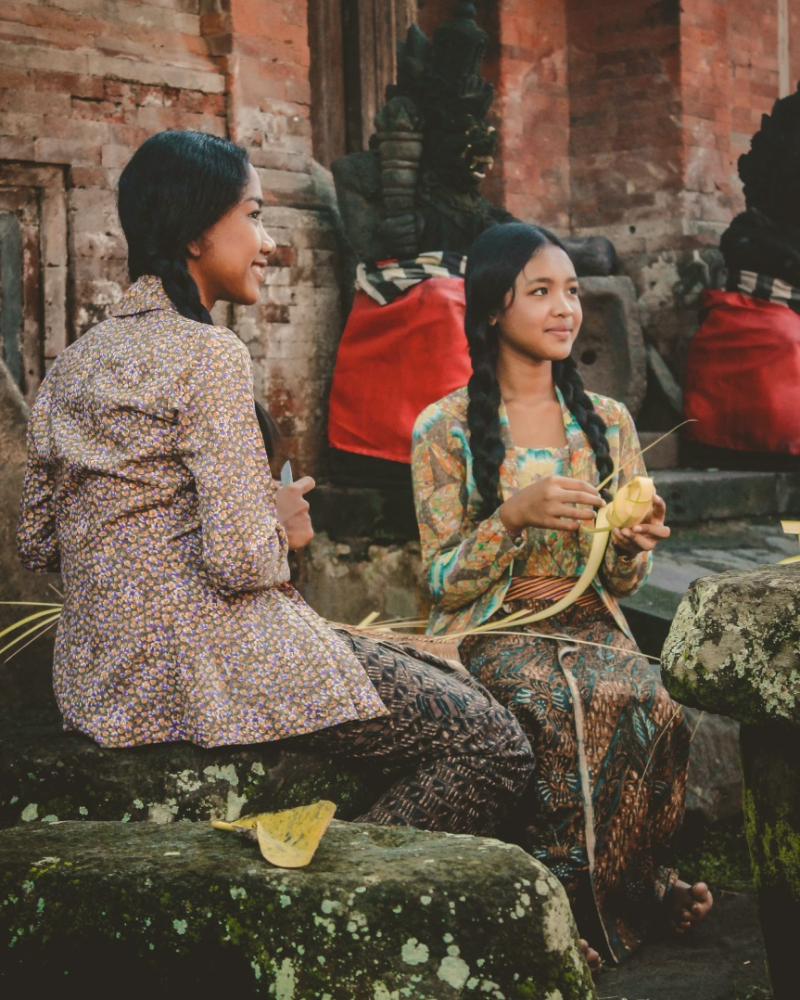

<section class="calture">
  <div class="container calture__container">
    <div class="calture__left">
      <div class="section-summary">INDONESIAN CULTURE</div>
      <h2 class="section-title">
        Our culture here is&nbsp;very friendly to&nbsp;people
      </h2>
      <p class="calture__text">
        known for his politeness, manners and gentleness. This becomes
        a&nbsp;characteristic when they mingle with other tribes and become
        basic traits that are passed down by&nbsp;their ancestors.
      </p>
      <a href="#" class="read-more">
        ream more
        <div class="read-more__icon">
          <svg>
            <use xlink:href="img/sprite.svg#arrow-right"></use>
          </svg>
        </div>
      </a>
    </div>
    <div class="calture__right">
      
    </div>
  </div>
</section>
